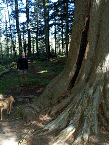

MacArthur Pine
Nicolet National Forest, Wisconsin

"The MacArthur Pine is over 400 years old and prior to an attack by lighting stood 150' high.
It is still spectacular at 100' tall and dwarves all the surrounding trees.
I was glad that we went to see it while it is still standing.
The center is hollow and burnt and I don't think this pine will be standing much longer.
The amazing thing is that some green bows still do exist on the tree.
On our way to visit the MacArthur Pine we saw signs for two school forests (Laona and Wabeno).
The northern Wisconsin landscape was an amazing place at the turn of the century.
Clear cutting had been used, with the thinking that the end of the forest would never
be reached. In the 20's schools started to plant forests to replace some of the trees.
Now of course, clear cutting of pine plantations does take place in a managed fashion with replanting always being a component and the forests of Wisconsin are
beautiful place again.
Majestic characters like the MacArthur Pine are however a rare treat."
Jane Hansen
Chicago

© Jane Hansen 1998
Latin Name: Pinus Strobus
Common Name: White Pine
Location: North of Crandon and Laona in the Nicolet National Forest, Wisconsin USA
Medium: Digital Photography
 Return to Main Page
Return to Main Page
Comments
Please send e-mail to: June Julian jj68@nyu.edu